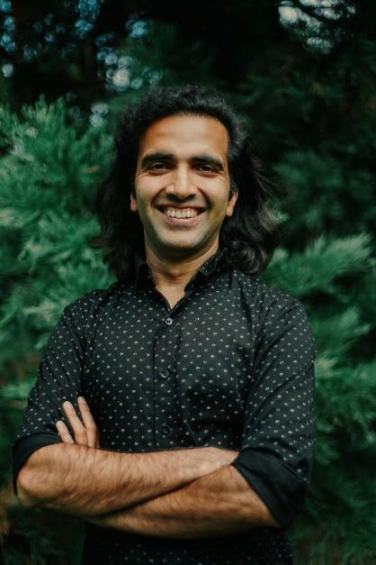

I am a systems scholar* of cultures, technology & economy. I bridge traditional sources of knowledge with the wisdom of modern academics. My work is to build social technologies which provides support towards building a world of harmony, richness and equity. I wear multiple hats as a scientist, entrepreneur, community builder, and an animistic researcher of cultures, economies, psyche, and somatic practices.
* Modern dictionary defines scholar as a specialist in a particular branch of study. I use a more holistic definition of scholar. Holistically, scholar means someone with a well defined & embodied knowledge system. This scholarship happens at the intersection of the wisdom of essential-Self and collectively defined knowledge systems.
The official line: I am a senior researcher at Microsoft Research with Research for Industry Lab. I also occasionally teach at University of Washington Seattle. I have spent the past decade studying decision making and Artificial Intelligence (AI) under complex and uncertain environments within processes and systems. For more information on this work please see here. Prior to joining Microsoft, I co-founded a healthcare technology company, Cohort Intelligence (now Engooden Health), based on my research in clinical language processing (original patent here), where I led the development of the first product line in chronic care management. For more information on the other list of publications and patents please visit here. I hold a Ph.D. from University of Washington Seattle, where my thesis was based in Operations Research using Reinforcement Learning. My undergraduate program was at Indian Institute of Technology Madras (IIT Madras), India.
The unofficial line: In addition to the data driven and AI research, I have also spent the last half decade researching psychological and cultural aspects of a) healthy family systems, b) building co-creative & resilient relations & communities, and c) inspired work for a regenerative & circular economy. I use an animistic lens to understand and synthesize the complexity of the modern & globalized experience. Animism goes beyond the discrete & numerous manifestation of mundane experiences into the field that binds these experiences in a cohesive evolutionary story. My explorations and research has taken me to study some of the Traditional Ecological Knowledge Systems (TEK), Indigenous Ecological Knowledge Systems (IEK), mythologies, cultural anthropology & somatics. I have compiled some of the resources that had key role in shaping my intellectual and experiential knowledge here.
Currently I live in the beautiful city of Seattle (og. Si'ahl, pronounced "See-ahlth), WA - USA which is the original home for Duwamish people, among other indigenous communities.
Peeyush Kumar, Ph.D.